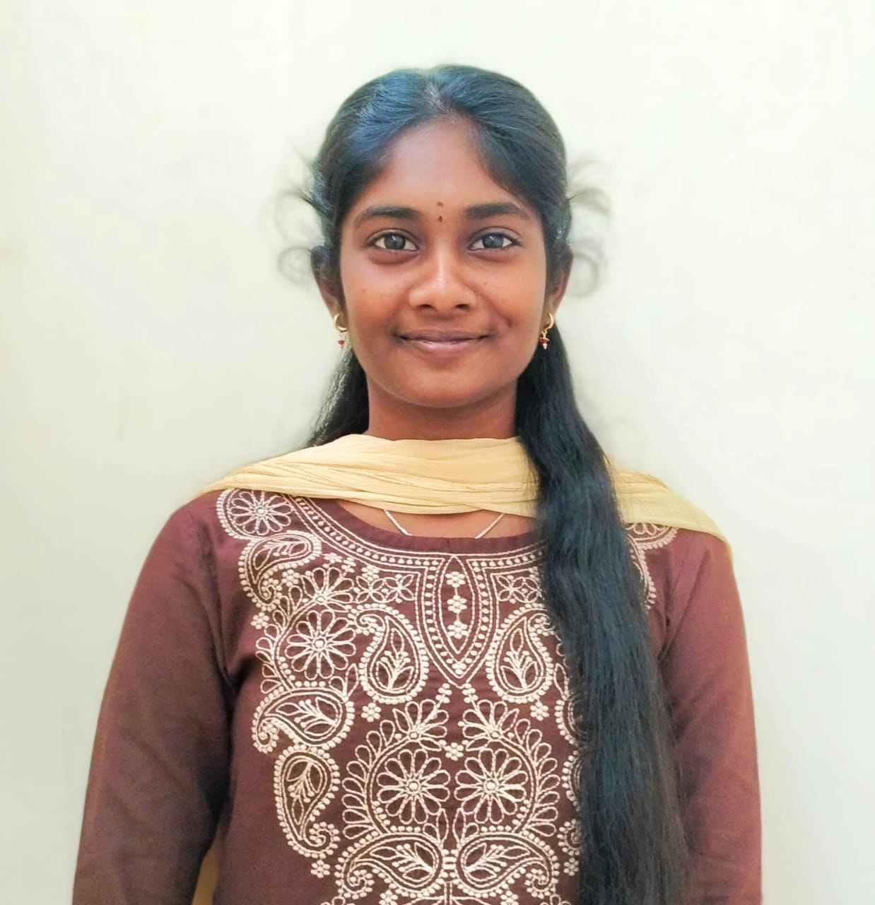

Programming
C · C++ · Python · Java · SQL · Data Structures And Algorithms · Design & Analysis of Algorithms
COMPUTER SCIENCE & ENGINEERING STUDENT
Interested in Artificial Intelligence, Machine Learning and building useful technology that solves real-world problems.

A LITTLE ABOUT ME
I am a Computer Science and Engineering student at Sri Eshwar College of Engineering, Coimbatore. I enjoy learning new technologies, solving programming challenges and developing projects that connect software with real-world needs.
My current interests include AI, Machine Learning, data-driven applications and full-stack development. I believe in learning by building, testing and improving.
WHAT I WORK WITH
C · C++ · Python · Java · SQL · Data Structures And Algorithms · Design & Analysis of Algorithms
HTML · CSS · JavaScript · Django · Node.js · React.js
AI/ML fundamentals · NumPy · Pandas · Scikit-learn · Machine Learning and Training
Git · GitHub · VS Code · MySQL · PostgreSQL · MongoDB · Firebase · Docker · Postman API Testing
SELECTED WORK
A selection of projects exploring software, AI and real-world problem solving.
Explores landslide risk monitoring using environmental and geospatial information to support early warning in the North Eastern Region of India.
View repository ↗A digital platform project focused on organizing and presenting Business Responsibility and Sustainability Reporting information.
View repository ↗A project focused on making electronic-waste collection and management smarter through a technology-based approach.
View repository ↗A web application for secure document storage and management, including authentication, file upload and download, deletion and expiry tracking.
Visit GitHub profile ↗MY LEARNING JOURNEY
2025 — 2029
Sri Eshwar College of Engineering · Coimbatore
CERTIFICATIONS
NPTEL Joy of Computing using Python · Kaggle Intro to Machine Learning · Infosys Springboard courses
2026
Participated in SmartAIthon at Karpagam College of Engineering.
LET'S CONNECT
I'm open to learning opportunities, collaborations and meaningful tech projects.